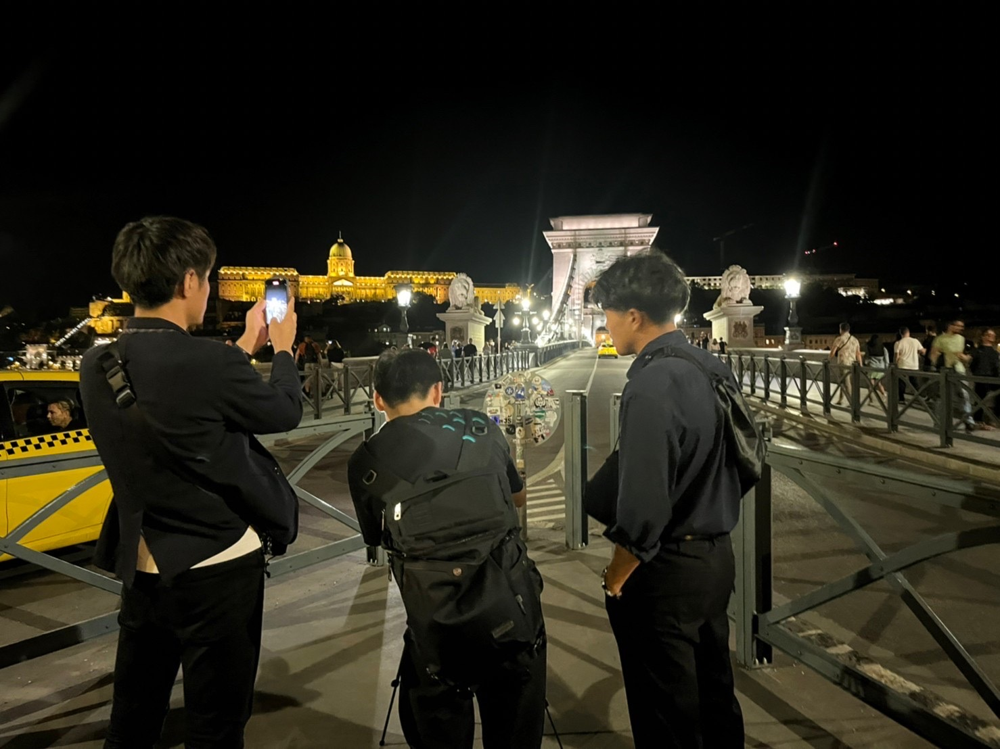

About Me

Adachi Masatoshi
足立 真敬
人文学部国際コミュニケーション学科卒業。
大学院にて応用言語学の観点からクリエイティビティを研究しています。
学部時代から海外フィールドワークや学会発表を経験し、研究成果を国際的に発信してきました。
映像翻訳プロジェクトでは、国連UNHCR協会主催の映画祭に出品される作品の字幕制作に携わりました。
異文化理解と共同活動を通じた深い学びを強みとしています。